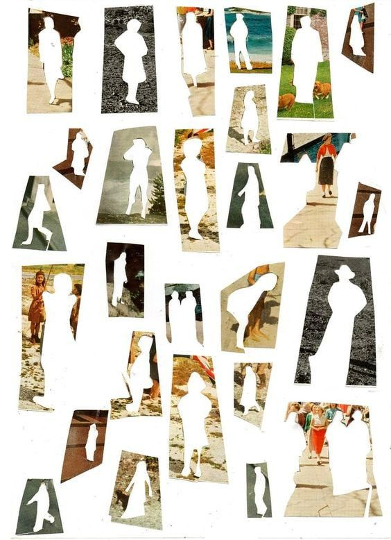

Hi, I'm Nora. I'm a postdoc at NYU working with Cate Hartley. I completed my PhD in Cognitive Science at UC Irvine with Aaron Bornstein.
The overarching goal of my work is to understand how humans adapt to their environment across multiple timescales—rapidly through learning and more gradually across development.
Some questions I'm pursuing are:
- How do our current and early-life environments shape how we remember the past, learn from the present, and plan for the future
- Why do certain early experiences, such as poverty and neglect, confer vulnerability to mental illness?
To address these questions, I combine behavioral experiments with computational modeling (e.g., reinforcement learning, Bayesian latent-cause inference).
To generate precise, testable hypotheses, I draw on normative theories from computer science, cognitive science, and evolutionary biology.
Links to specific projects are below.
If you'd like to get in touch, email me at nora.harhen@nyu.edu.
Why do we over-exploit?
How do children, adolescents, and adults use episodic memory to guide their decisions?
Why do early experiences of unpredictability alter learning?

How do early-life environments shape individual differences in decision-making?